The late 90s saw the emergence of Capcom in the world of arcades. The Osaka based company seemed to produce one hit after another with Ghouls'n Ghosts in 1988, Final Fight in 1989 and Street Fighter II in 1991 among a myriad of other excellent games.
During this era, a video-game enthusiast could not go to an arcade without seeing multiple Capcom cabinets, proof of their popularity with both players and operators.
Over the past six months, I have spent my spare time studying Capcom success stories and in particular the genesis of Street Fighter II. If discovering the engineering behind the CPS-1 was fascinating, I found the side story of how developers tracked ROM budget using paper and scissors equally interesting.
Introduced in 1988, the CPS-1 (a.k.a CP-System at the time) was Capcom unified arcade platform. Among its many innovations was a powerful graphic rendering pipeline.
If it still embraced the concept of layers, the CPS-1 abandoned the constraint of rectangular sprites. The OBJ layer is built via 16x16 units called "tile". In Street Fighter II, tiles are combined to make character poses. This approach gave considerable freedom to the artists who proceeded with designing "objects" of arbitrary sizes and shapes.
| 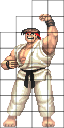 |
|
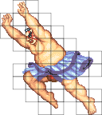 | 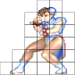 |
| Ryu's victory pose (29 tiles) | Sagat's Tiger Uppercut pose (30 tiles) | Honda's Jump pose (45 tiles) | Chun-li being awesome pose (25 tiles) |
Besides a few basic operations such as horizontal and vertical flipping, the CPS-1 cannot alter tiles. It has no rotating or scaling capabilities. What made the machine stand out was the sheer volume of tiles it could manipulate per frame, reported to be in the vicinity of 256.
It was a real tour-de-force at the time to make so much of the screen move. The "wow" factor immensely contributed to the success of the games. In a game like "The Punisher", the kingpin final boss is made of poses reaching up to 80 tiles.
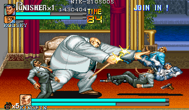"The Punisher" screen can be almost covered with sprites (Source: rq87.flyingomelette.com).If the CPS-1 capabilities were a blessing for artists, it was a problem for project managers. In an era where ROM chips were very expensive, a game was allocated a ROM budget at its beginning which it could not exceed.
Before the CPS-1, remaining within the budget was a simple matter of a division. The number of #sprites allowed to the art team was ROM size / rectangular sprite size. But the free form factor introduced a tracking problem.
The solution came under the form of paper sheets and scissors.
In order to make the best use of the capacity we had, we wrote the ROM’s capacity on a board, and cut and paste the pixel characters on the board.A blank sheet
If there was space left on the board, then there was open capacity in the ROM. So, from there we started filling in the spaces, like a puzzle.
One thing that happened that’s kinda interesting, we saved making the ending for last, and by the time we got there we were all out of capacity. We were wondering what to do, when we found a board that had gone missing under a desk.
We called it the ”Mirac-ulous Memory.”
- Akira Nishitani, SF2 development interview
Since the CPS-1 uses 16 indexed colors (4-bit per pixel), a sheet of 16x16 tiles represents 16x16x16x16 / 2 = 32 KiB. For a game such as Street Fighter II: World Warrior, the team allocated 4.6 MiB out of its 6 MiB ROM budget to sprites and therefore printed 144 paper sheets.
This system is a golden opportunity for a software archaeologist. Among other things one can see which features were added later (these would be implemented using left-over space and therefore less elegantly cut out).
Unfortunately, I was only able to come across two of them. I found a Dhalsim in the article "Final Fight Developer's Interview"[1] and a Ryu in the book "How To Make Capcom Fighting Characters"[2].
| 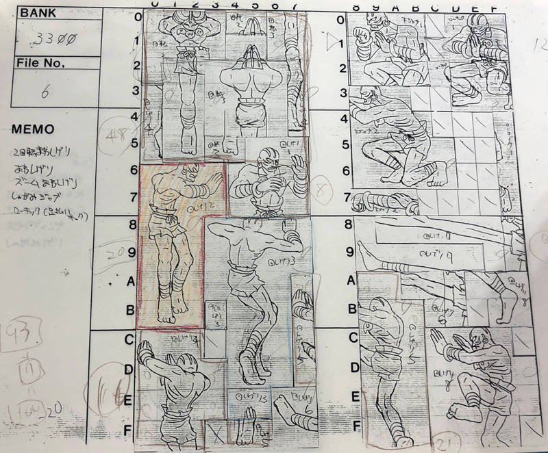 | 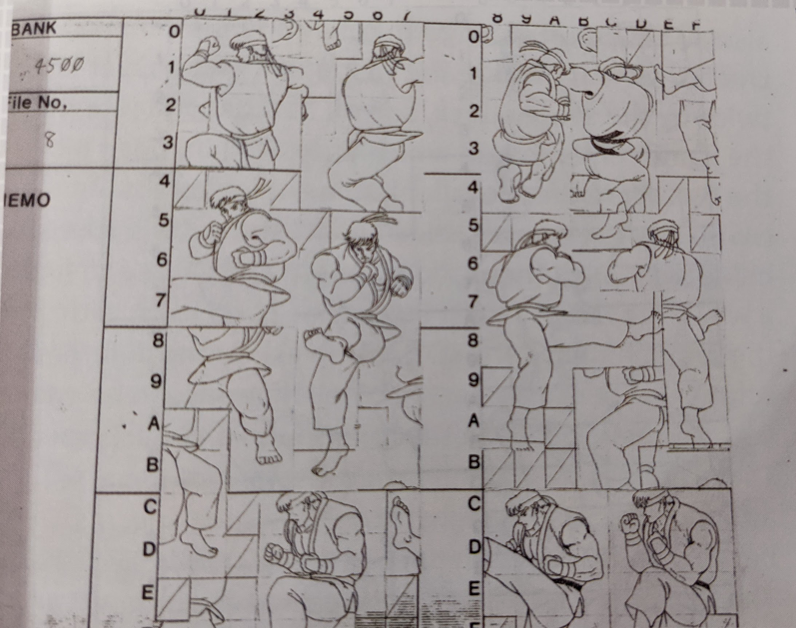 |
Sheet 0x3300 | Sheet 0x4500 |
Notice the tile addressing system in the upper left of each sheet (Dhalsim 0x3300 and Ryu 0x4500). The first two hex characters give a value [0-255] which is the sheet ID while the two remaining are the tile ID within that sheet.
Also notice how the sheet tiles are rectangular instead of square. The CP-System uses a resolution of 384×224 which aspect ratio differs from the 4:3 aspect ratio of a CRT. Had designers drew in squares, the result would have been compressed on screen. By drawing in rectangles, they essentially reverse-stretched the visual assets so tiles would be displayed as they were drawn. This non-square pixel system was a nightmare for the art team.
When I was working on Forgotten Worlds, I noticed the problem of aspect ratio. "The pixels are not square!" I told my boss.
"Impossible, I ordered them to be square!" he replied and called hardware on the spot.
"The pixels are square!" he replied.
Later I protested again to which my boss replied it was a calculation error.
- Akira Yasuda, SF2 producer[3])
It was disappointing to see that only two sheets had come out but it was possible to reconstruct them using the imprint left in the ROM. Thanks to mame and sf2platinium providing the GFX-ROM format, a tool[4] was written to automate the process. With all the sheets reconstructed, it was analysis and hypothesis time.
The CPS-1 works with four layers. The OBJ layer of Street Fighter II is made of 144 sheets totaling 4.6MiB. The remaining 1.4MiB is used for the background and frontground layers called SCROL1 (16 sheets), SCROL2 (8 sheets), and SCROL3 (23 sheets).
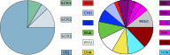The most byte-heavy characters are Zangief (19), followed by Honda (15), Dhalsim (14, he is slim but stretches a lot!), Blanka (15), Ryu (13.5), Guile (11), Chun-li (10), Dictator (9, his cape takes a whole sheet!), Sagat (6), Boxer (6), Claw (6), and Ken (3).
The first sheet features, without surprise, the main protagonist Ryu.
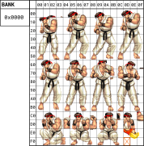
Notice how Ryu's top hair for 0x69/0x6A was placed at 0x6F/0x9F in order to not disturb the layout. Why the hair of the top left pose is offsetted is unknown. Could it be that GFX ROM address 0x0000 could not be used? Analyzing other games also showed that tile 0x0000 was never used.
|
| ||||||||||||||||
| Ryu palette | ||||||||||||||||
|
| ||||||||||||||||
| Ken palette |
Looking at the pie chart, we can see that Ken character is consuming an impossibly small amount of three sheets.
That is because Ken is a patch on top of Ryu tiles. Ryu palette is specially designed to be skin tone compatible with Ken. Only the clothes and face colors differ.
| 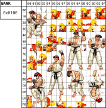 | 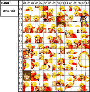 |
The patching is obvious on sheet 0x0100 where Ryu's winning pose 0x76 is next to Ken 2x2 patch at 0x70.
| 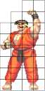 | 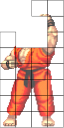 | 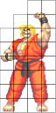 |
Ken's victory pose starts with Ryu's pose. The palette is changed and only differing tiles are used. Notice how Ryu's teeth white color comes from his clothes. For Ken, artists had to reuse some of the skin color because Ken's Gi is red.
In sheet 0x4700 ("Ken is patch" section), we can see a 2x2 portrait at 0xC0 that is not a fighter. This is in fact the picture of the development team. They are featured in the credit at the end of the game. Notice how it features neither accurate pictures nor give real names. Likely done so to avoid talent poaching.
Fun fact: "NIN" is the alias of Akira Nishitani who was a producer at Capcom. It was used for all high scores in all games he worked on including Forgotten Worlds, Final Fight, and Street Fighter 2.
Developers seem to have been so short on ROM that they even used partial pose symmetry. In 0x4E00, Sagat's left leg is missing at 0xBA. To draw it, the CPS-1 is instructed to use the right leg tiles and flip them horizontally.
| 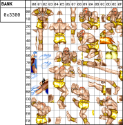 |
Dhalsim reconstructed sheet is a near perfect match. Although we can see that the pose outlined in red did not make the cut. It was sacrificed to Chun-li's "Hundred Rending Legs" which would indicate it was a later addition. At 0x4C we can see crumble space was allocated to Blanka.
| 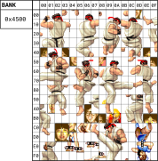 |
Similar differences can be seen in Ryu's sheet. Two poses (at 0xC2 and 0xCC) were deleted before shipping to accommodate Chun-li's "Spinning Bird Kick" (a move also added at the end of development?) and the team credit portraits.
With powerful workstations such as the X68000 around at the time, I always wondered for how long the sheet system was used before a tool was written to compile the GFX assets. With the ability to look at other game sheets, it was possible to make a rough estimate.
The first destination was to visit all games made by the same team starting with titles released prior to SF2, Forgotten World and Final Fight. Although I did not take the time to locate the palettes and used a default greyscale, it was still possible to see shapes distinctively.
| 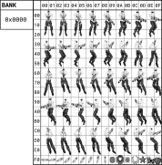 | |
| Forgotten World sheet (1988) | Final Fight sheet (1989) |
Without surprise, the same structure was found. Later games such as Street Fighter 2: Champion Edition and Street Fighter 2: Hyper Fighting were also checked. The GFX received minimal improvements[5] and the sheet structure remains unchanged.
| 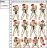 | |
| Street Fighter 2: Champion Edition (1992) | Street Fighter 2: Hyper Fighting sheet (1992) |
Capcom had several titles produced in parallel by different teams. Checking other teams' work responsible for Ghouls 'n Ghosts and Strider showed once again the same process albeit less crammed.
| 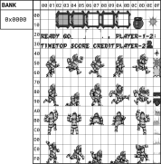 | |
| Ghouls 'n Ghosts sheet (1988) | Strider sheet (1989) |
Some CPS-1 games were not produced by Capcom. This was the case for Pang-3 by Mitchell Corporation. Once again, no changes.
It seems like the sheet system was in effect for most if not all CPS-1 games. Looking at CPS-2 games was a bit more difficult since Capcom added many protection mecanisms. While the 68000 instructions and Z-80 instructions were encrypted, the GFX ROMs are merely shuffled and easily viewable.
In the first CPS-2 title, Super Street Fighter 2 (1993), four new characters were added to the existing twelve roster. The existing character sheets are unchanged.
| 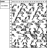 | |
| Super Street Fighter 2 Ryu sheet (1993) | Super Street Fighter 2 Cammy sheet (1993) |
But if we look at Cammy sheets (0x9000) the layout was clearly not made by hand. It seems an allocation system proceeding top to bottom and left to right was used instead. It seems like Capcom started using tools to build new GFX ROMs for SSF2 circa 1992. Whether x68000 workstations were used remains unknown.
Moving forward with CPS-2 titles, Street Fighter Alpha (1995) and Street Fighter Alpha 3 (1998) both show the same type of structure indicative of a tool. All sheets look like mashed potatoes without any wasted tile space. It is likely that none of the CPS-2 titles used the sheet system.
| 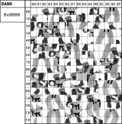 | |
| Street Fighter Alpha sheet (1995) | Street Fighter Alpha 3 sheet (1998) |
I have made several attempts to talk with developers who worked on CPS-1/CPS-2 systems. All of them have failed so far. I would like to document and preserve how these machines were programmed. I am especially interested in knowing how the X68000 was used. If you have first hand experience or if you can get someone in touch with me, please email me :) !
| ^ | [1] | Final Fight Developer's Interview |
| ^ | [2] | How To Make Capcom Fighting Characters |
| ^ | [3] | Akiman's Twitter account |
| ^ | [4] | Tool CPSheet |
| ^ | [5] | Differences Between SF2 World Warrior and SF2 Champion Edition |